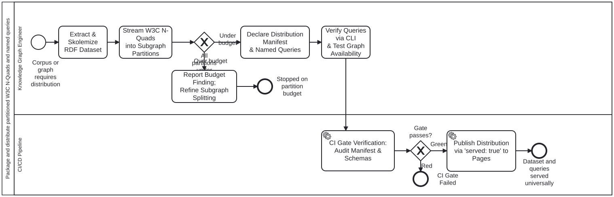

Generated from
cat-harness/processes/kg/nquads-distribution.bpmnbygen-processes-viz.ts— do not edit here. All processes
Process_NQuadsDistribution · strict · 7 step(s)
Extract, partition, package, and distribute knowledge graph datasets as W3C RDF 1.1 N-Quads with pre-compiled named SPARQL queries. Governed by skills nquads-distribution and named-query-execution, grounded in schemas/nquads-distribution.ts.
CRITICAL INVARIANTS:
.nq.gz distribution payloads are gitignored, generated on demand or in CI, and served to Pages via ‘served: true’.
| lane | role | what it does here |
|---|---|---|
| Knowledge Graph Engineer | platform-authoring-agent |
The agent or engineer authoring or packaging the knowledge graph dataset: extracts RDF triples, skolemizes blank nodes, splits by subgraph topology, checks partition budgets, and tests named queries. |
| CI/CD Pipeline | build-pipeline |
Automated CI validation and deployment pipeline: validates schema conformance, enforces graph availability guards, and publishes to GitHub Pages. |
Every one of the 7 step(s) is documented.
| step | lane | skill / sub-process | what it does |
|---|---|---|---|
Extract & Skolemize RDF DatasetA_ExtractSkolemize |
Knowledge Graph Engineer | nquads-distribution |
Extract the target RDF triples and ensure strict upstream skolemization: transform every blank node into a deterministic IRI under the dataset namespace. Zero blank nodes allowed in serialized N-Quads. |
Stream W3C N-Quads into Subgraph PartitionsA_PartitionQuads |
Knowledge Graph Engineer | nquads-distribution |
Serialize lines conforming to W3C RDF 1.1 N-Quads (subject predicate object graphIri .). Split into Tier 1 Spine (routing backbone) and Tier 2 Subgraphs (communities, domains). Compress each into .nq.gz. |
Report Budget Finding; Refine Subgraph SplittingA_ReportBudgetExcess |
Knowledge Graph Engineer | nquads-distribution |
Record the oversized partition on the coordinating bean. Refine subgraph partitioning boundary or split into finer subgraphs. Do not ship oversized partition. |
Declare Distribution Manifest & Named QueriesA_DeclareManifest |
Knowledge Graph Engineer | nquads-distributionnamed-query-execution |
Write subgraph-manifest.json conforming to folio-nquads-distribution/v1. Declare datasetIri, servedRoute, spine, subgraphs, and audited named SPARQL queries with explicit requiredSubgraphs and typed parameter definitions. |
Verify Queries via CLI & Test Graph AvailabilityA_VerifyQueries |
Knowledge Graph Engineer | named-query-execution |
Execute named queries using scripts/nquads-query.ts and the nquads-query MCP tool. Assert that missing partition triggers MissingPartitionError and typed parameters prevent injection. |
CI Gate Verification: Audit Manifest & SchemasA_GateCheck |
CI/CD Pipeline | named-query-execution |
Validate that subgraph-manifest.json conforms to NQuadsDistributionManifestSchema, all referenced partitions exist, and external schema w3c-n-quads is satisfied. |
Publish Distribution via ‘served: true’ to PagesA_DeployPages |
CI/CD Pipeline | nquads-distribution |
Publish distribution directory to _site/ via mount-instance-docs.ts respecting ‘served: true’ declaration. Quads files become accessible identically to web clients and CLI/agent runners. |
1 of 2 decision(s) carry no documentation — gateway-documented lists them.
| decision | what decides it | branches |
|---|---|---|
All partitions under 5 MB / 50k quads budget?GW_PartitionBudget |
Enforce partition size ceiling: verify that no partition exceeds MAX_RECOMMENDED_PARTITION_BYTES (5 MB gzipped) or 50,000 quads. Protects browser V8 heap and mobile allocations. | Under budget → Declare Distribution Manifest & Named Queries Over budget → Report Budget Finding; Refine Subgraph Splitting |
Gate passes?GW_CiGreen |
— | Green → Publish Distribution via ‘served: true’ to Pages Red → CI Gate Failed |